90% → ⅓
Почти 90% выпускников уверены, что умеют работать в команде. Согласна с ними треть работодателей.
hh.ru, Career.ru
 черновик
черновик
AI-тренажёр для абитуриента и стажёра. Кейс с подвохом, разбор как у эксперта, память об ошибках и пруф у каждого факта.
Цифровое наставничество и AI-менторство · Софтлайн Решения · Lead
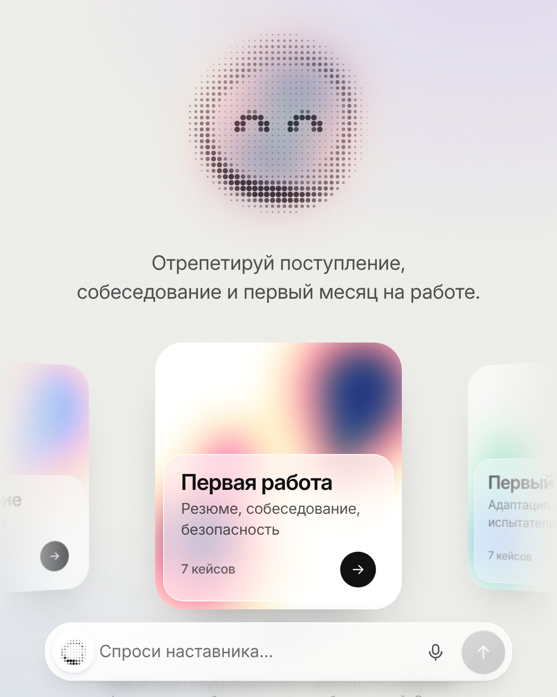
Проблема
90% → ⅓
Почти 90% выпускников уверены, что умеют работать в команде. Согласна с ними треть работодателей.
hh.ru, Career.ru
1 из 3
Работает по полученной профессии. Направление выбирают один раз и почти вслепую.
hh.ru, 2025
тишина
Новички, которые спрашивают, осваиваются быстрее. Но вопрос кажется слабостью — и его не задают.
Morrison, J. of Applied Psychology, 1993
Сайты вузов и вакансии отвечают на вопрос «что нужно». Никто не спрашивает в ответ: «А как ты сам это скажешь?»
Решение
01
Поступление, собеседование или первая неделя. Отвечаешь текстом или голосом.
02
Что верно, что улучшить, удачный пример. У каждого факта — пруф источника.
03
Следующая тренировка начинается с прошлой ошибки и слабых зон.
Тренажёр-экзаменатор
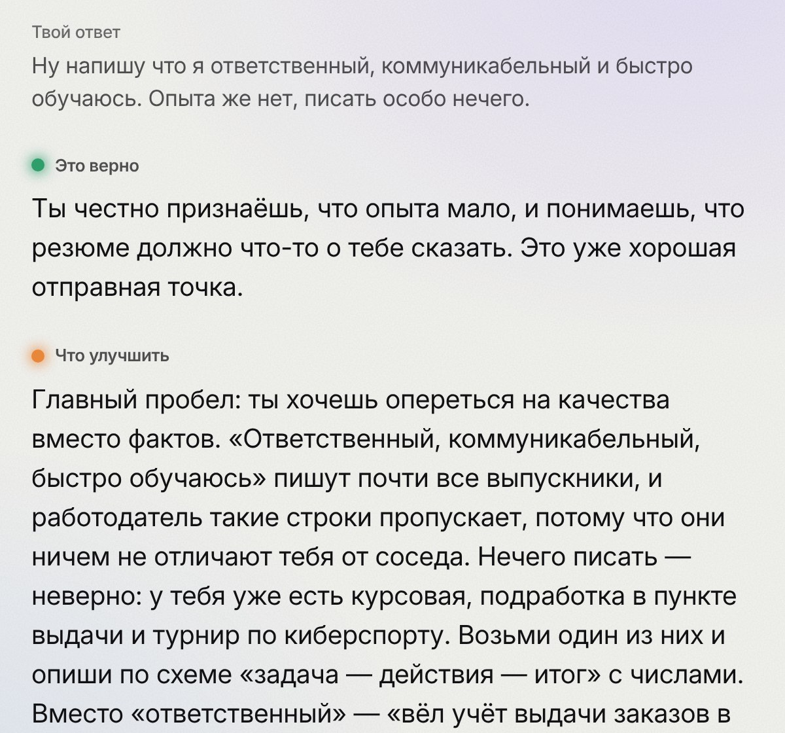
Обратная связь эксперта
«Ответственный, коммуникабельный, быстро обучаюсь»
«Вёл расписание и регистрацию на мероприятии факультета на 300 человек»
20 типовых ошибок. У каждой — причина, переформулировка и источник.
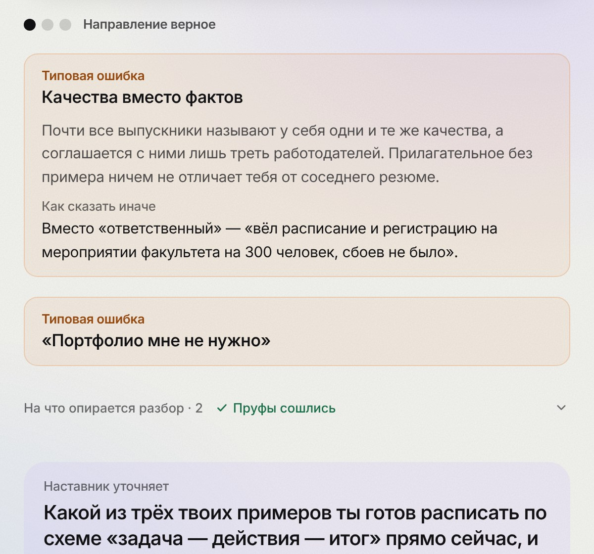
Справка
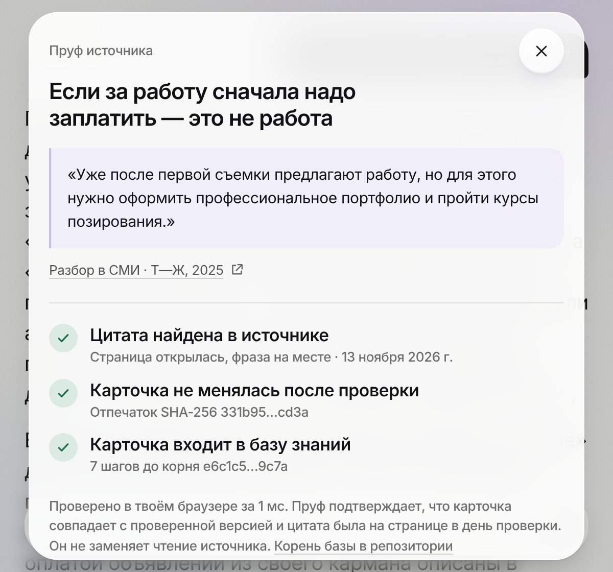
Интернет с пруфами
Ищет что угодно: сроки приёма, проходные баллы, зарплаты стажёров. Не нашёл — говорит, где проверить.
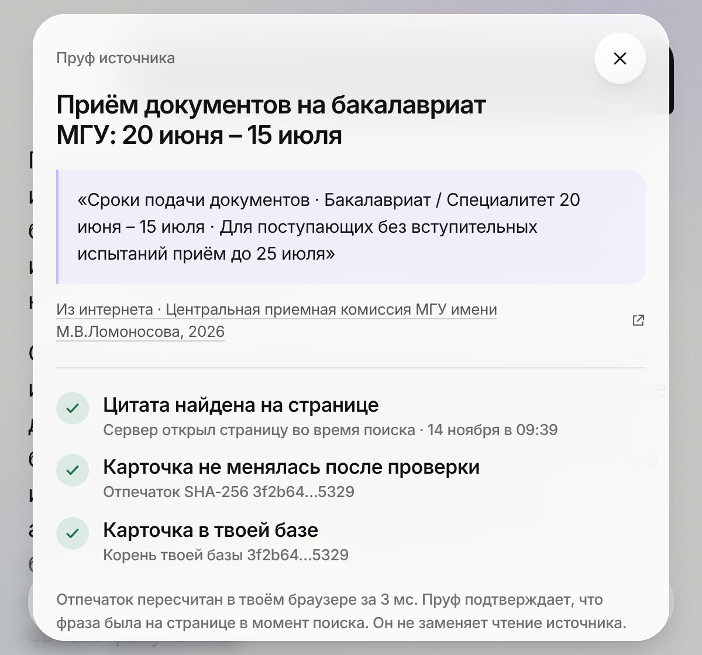
Память
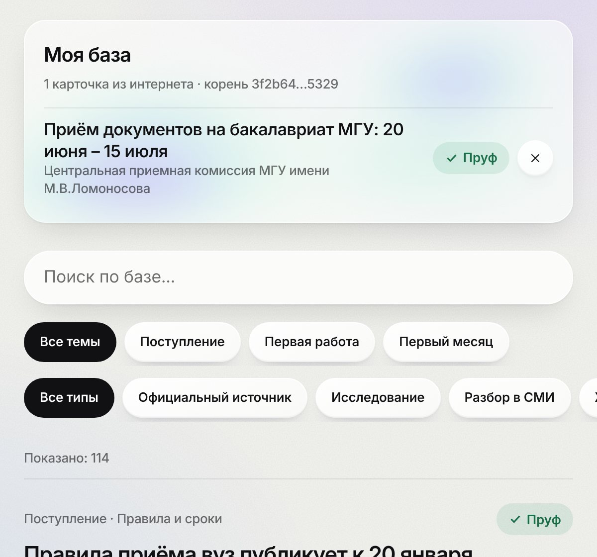
Чаты
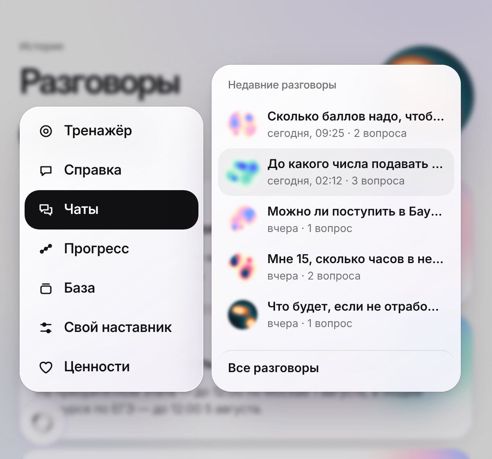
База знаний
114 карточек
101 источник
21 кейс
20 типовых ошибок
Официальные · 38
Минобрнауки, правила приёма МГУ, ВШЭ, МФТИ, СПбГУ, Бауманки и ИТМО, Трудовой кодекс
Исследования · 18
Schmidt и Hunter об отборе, Granovetter о слабых связях, Edmondson о безопасности
Разборы в СМИ · 49
hh.ru, Т—Ж, «Российская газета», РИА Новости, РАНХиГС, «Мел»
Живой опыт · 9
Истории о поступлении и обмане при поиске работы, посты HR на Хабре
Пруф-система
114 из 114 пруфов сходятся прямо в браузере.
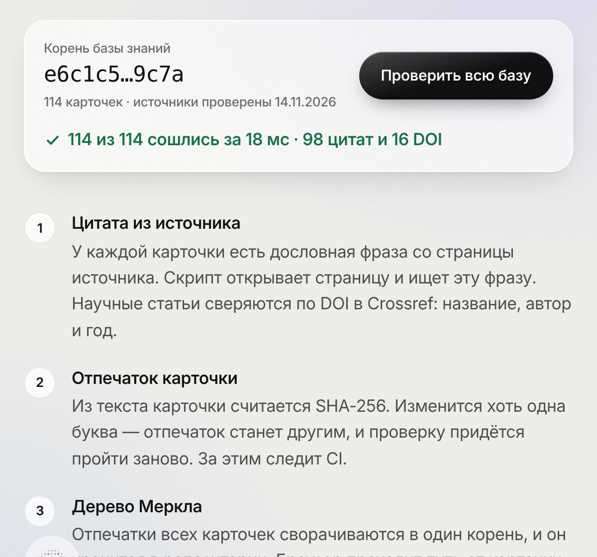
Адаптивность и аналитика
Карта прогресса: размытая точка — зона, где ответы пока плавают.
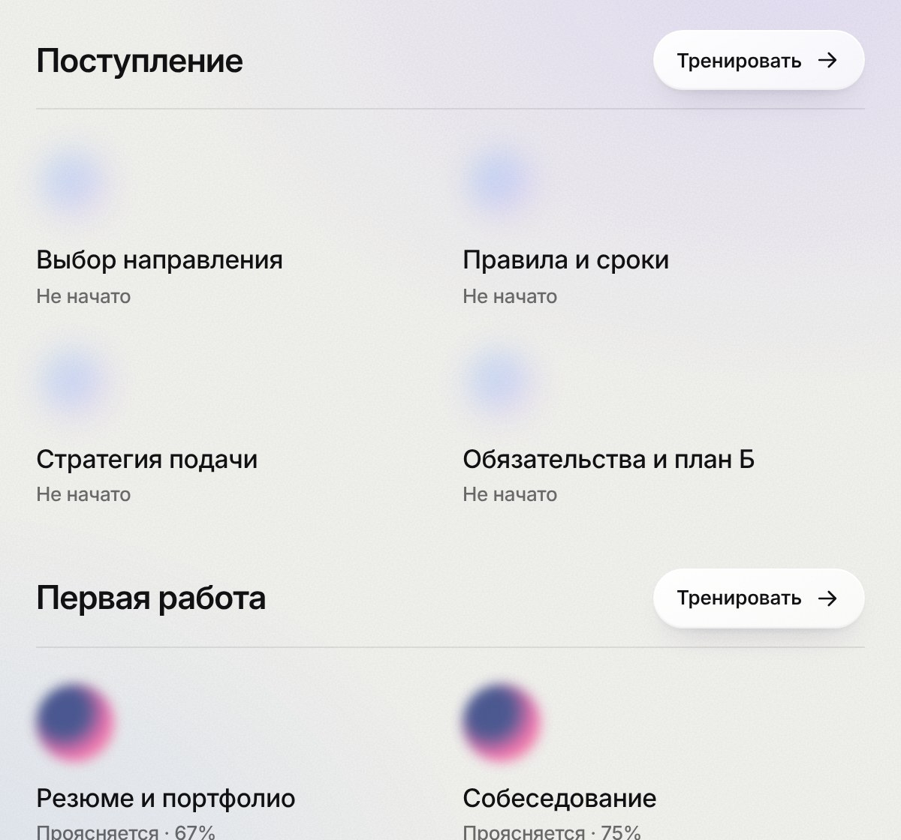
Голос и экспорт
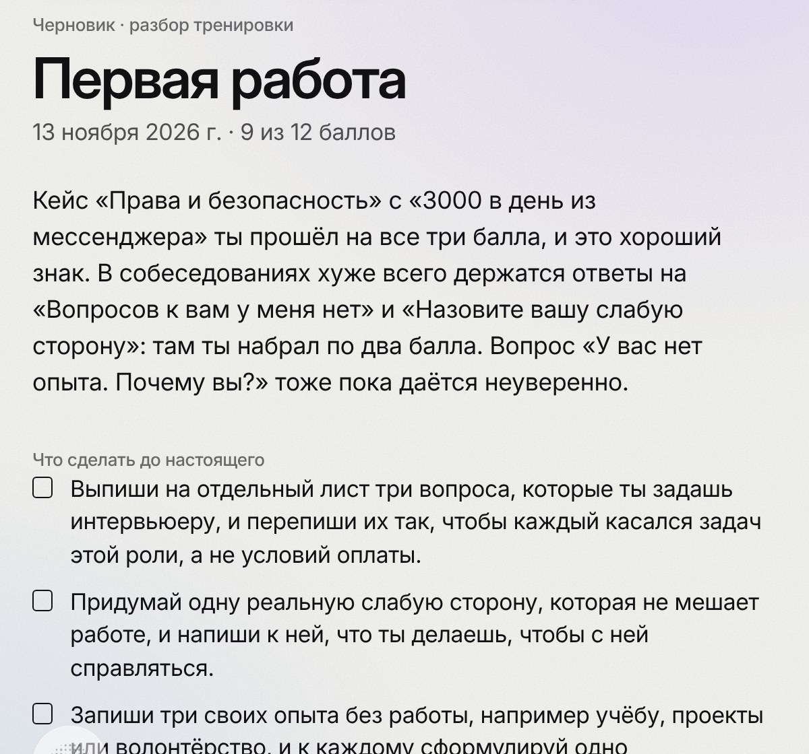
Ценности
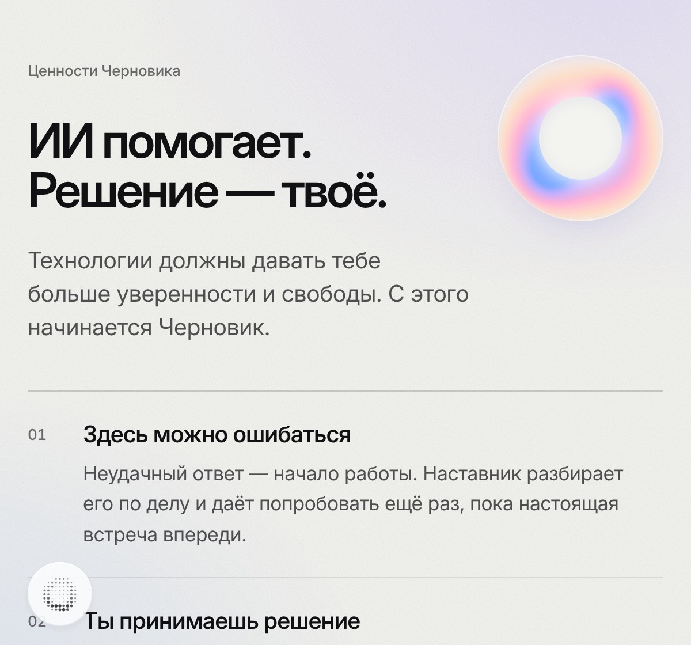
Архитектура и скорость
Браузер
React и TypeScript, без UI-библиотек
Память и проверка пруфов
Запись голоса в WAV
→
Функции Vercel
/api/chat — поиск, промпт, поток
/api/transcribe — речь в текст
Защита ключа и лимит запросов
→
OpenRouter
claude-haiku-5.5 — наставник
gemini-3.1-flash-lite — запасная и речь
Без скрытого размышления
0,7 с до первых слов разбора
3 с весь разбор
$0,003 тренировка целиком
CI тесты, типы, сборка и пруфы
Отрепетируй важный разговор. Проверь источники. Попробуй ещё раз.
chernovik-hellowrld.vercel.appЕсли сайт не открывается, включи VPN или прокси: хостинг Vercel доступен не во всех сетях.
github.com/arniByte/ed_adviser